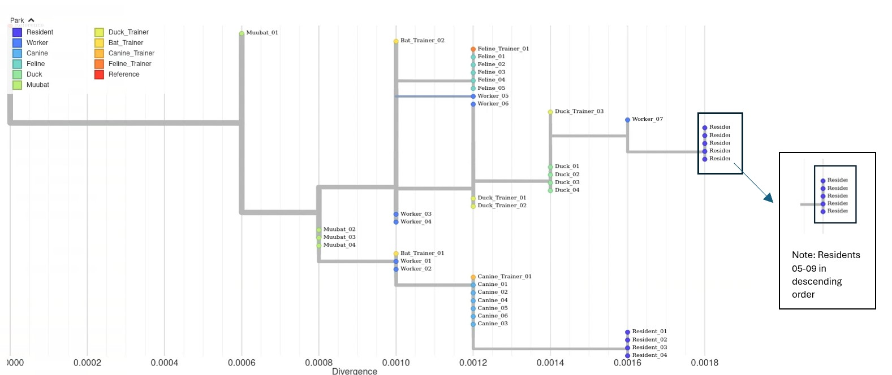
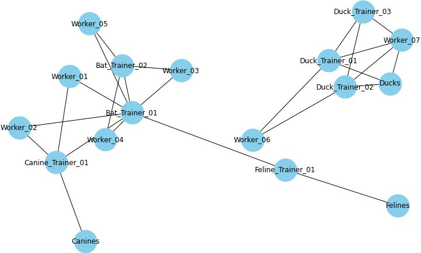
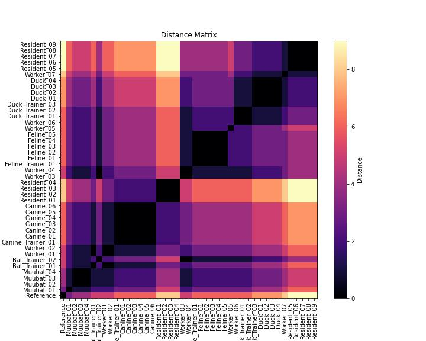

17 Genomic Analysis
The team met to discuss what kind of genomic analyses could be performed to help visualize the sequencing data of the outbreak. While the MSA shows us exactly where genetic differences occur in the sequences, a phylogenetic tree summarizes those differences into a branching diagram that helps us trace the virus’s evolutionary history and how it may have spread from host to host. They decided to construct a pairwise distance matrix and a phylogenetic tree using the sequencing alignment. The pairwise distance matrix and phylogenetic tree are examples of two essential tools in genomic epidemiology. These analyses would allow them to determine how closely related viral genomes were, whether the outbreak originated from an animal spillover event, and how the virus was evolving over time.
Example illustating a sequence alignment
Sequences Aligned:
Ref: ATGCTGATCGTACGTTACG
Seq A: ATGCTGATCGTACGTTACG (No mutations)
Seq B: ATGCTGATCGTACGTCACG (1 mutation at pos 16: T → C)
Seq C: ATGCTGATCGTTCGTCACG (2 mutations at pos 12: A → T, 16: T → C)
Seq D: ATGCTGATTGTACGTCACG (3 mutations at pos 9: C → T, 12: A → T, 16: T → C)
Seq E: ATGCTGATTGTACGTTACG (2 mutations at pos 9: C → T, 12: A → T)“Uhm”, raised the hand of one of the Local Health Jurisdiction Epidemiologists. “I understand alignments after looking at the sequence alignment results the Bioinformaticians generated. But I am a bit rusty when it comes to pairwise distance matries and phylogenetic trees. Perhaps one of you could explain it to me?”
“Sure thing”, exclaimed one of the Molecular Epidemiologists. Let’s start with pairwise distance matrices.
17.1 Pairwise Distance Matrices
A pairwise distance matrix is a table that quantifies the genetic differences between sequences by counting single nucleotide polymorphisms (SNPs). SNPS are individual base differences at specific nucleotide posititions in the genome. It helps to determine how closely related two samples are and whether genetic clustering aligns with known epidemiological links.
Each cell in the matrix represents the number of SNP differences between a pair of genome sequences. The smaller the number, the more similar the sequences are. A value of 0 means the sequences are identical.
Computing pairwise distance matrices is a relatively straightfoward process with several steps. First the sequence are aligned (or arranged to where the sequences line up together). In this case, each viral genome would be aligned to the reference genome to detect differences in nucleotide positions. Next, one would count the SNP differences. Each genome is compared and the number of nucleotide differences are counted. This produces a matrix where row = column (since sequence A vs B is the same as B vs A). Lastly, heatmaps can be generated from the matrices to give a visual representation using a color scheme.
Example illustrating a Pairwise Distance Matrix This pairwise distance compares the number of mutation differences between two sequences. For example, the number of mutation difference, also known as the genetic distance, between Sequence A and the reference sequence is 0, meaning that the sequences are identical and possess no differences in mutations. However, Sequence D has a genetic distance of 3 when compared to the reference sequence, meaning that there are 3 mutations not shared between the two sequences. As such, Sequence A is more closely related to the reference than Sequence D. In terms of tracing how the virus spreads or its transmission, it is likely that the reference and Sequence A belong to the same transmission chain than that of the reference and Sequence D.
Example illustrating a heatmap of a pairwise distance matrix
“I see now, thank you so much! That makes sense.” Smiled the Local Health Jurisdiction Epidemiologist.
Another Molecular Epidemiologist chimed in, “I am happy to explain phylogenetic trees!”
17.2 Phylogenetic Trees
A phylogenetic tree is a hierarchical clustering or branching diagram that represents the evolutionary relationships between sequences based on genetic similarity. In this outbreak investigation, the tree helps determine how closely related viral genomes are across different individuals and species. Think of it as a family tree where we can trace the ancestry of a virus.
Each tip (or leaf) on the tree represents a sample’s genome sequence of the virus. The branches connecting them indicate evolutionary relationships, or the sharing of a common ancestor, and branch length represent the amount of genetic difference between sequences.
When interpreting trees, there’s so much to consider! Yet, let’s keep it simple and expand on the concept of a “family tree” with sequences being “closely related”. Samples that are closer together along the x-axis being more genetically similar and genetically related to each other. Shorter branch lengths indicate fewer genetic differences between sequences, meaning that there’s less mutations between the sequences and they share a more recent common ancestor. However, longer branches means an accumulation of more mutations. As such, this would mean that the sequences are less closely related or are distantly related. Identical sequences would occur along the same x-axis but would be stacked vertically on the y-axis for visibility.
Example illustrating phylogenetic tree based on sequence alignment Imagine this tree to represent viral sequences of pathogen X. This phylogenetic tree uses a type of algorithm called “Neighbor-Joining” to cluster the sequences based on genetic similarities. In other words, this Neighbor-Joining tree illustrates the similarity among sequences based on their nucleotide differences, with Seq A serving as a stand-in for the reference since it is identical to it. Starting from Seq A, the tree shows that Seq B is the most similar sequence, differing by only one mutation, suggesting it was the earliest to diverge from the reference. Seq E branches off next; although it has two mutations relative to the reference, it shares key differences with the more diverged sequences. The most closely related pair in the dataset is Seq C and Seq D, which differ from each other by just a single mutation and share additional differences not found in the other sequences. This pattern suggests they share a recent common ancestor and in terms of epidemiological context this may represent part of a localized transmission cluster.
It’s important to keep in mind caveats and limitations when interpreting phylogenetic trees. For example, while this tree reflects patterns of similarity rather than explicit evolutionary history, its structure can still offer insights into possible transmission relationships, particularly if sequences that are genetically similar were also sampled close together in time and space. However, because Neighbor-Joining does not reconstruct mutation order or directionality, it cannot by itself establish who infected whom or infer precise chains of transmission without incorporating additional epidemiological data.
Example illustrating a phylogenetic tree 
“I see now” said the Local Health Jursidiction Epidemiologist. “Thank you so much for explaining! I imagine the process to generate the trees requires some form of computation?”
“Absolutely!” cheered the Molecular Epidemiologist. I’m happy to explain that as well.
17.2.1 Generating Phylogenetic Trees
Once genome sequences are aligned and mutations are identified, the next step is to construct a phylogenetic tree—a visual representation of their evolutionary relationships.
Phylogenetic trees can be constructed using two broad approaches: distance-based and character-based methods.&
- Distance-based methods (such as Neighbor-Joining or UPGMA) calculate a pairwise distance matrix, often using the number of single nucleotide polymorphisms (SNPs) separating each sequence pair. These methods then use clustering algorithms to build the tree, grouping together sequences with the smallest genetic distances.
- Character-based methods (such as Maximum Parsimony or Maximum Likelihood) work directly from the multiple sequence alignment. Instead of summarizing overall similarity, these approaches analyze site-by-site changes across the alignment to infer the tree that best explains the observed pattern of mutations.
In general, the process begins by generating a multiple sequence alignment, in which all genome sequences are compared nucleotide by nucleotide to pinpoint mutations. For distance-based methods, a distance matrix is calculated to quantify genetic differences between all pairs of sequences, and this matrix is then used to build the tree. For character-based methods, the sequence alignment itself is used directly in the tree-building algorithm—no distance matrix is required.
Regardless of the approach, the resulting phylogenetic tree is a branching structure, or “family tree,” that depicts how the sequences are evolutionarily related.
The final tree would reveal key insights about the outbreak. “Given the outbreak, if sequences from the muubats and infected trainers clustered closely together, it would provide strong evidence of spillover from animals to humans” explained one of the Molecular Epidemiologist. “Alternatively, if human sequences showed signs of divergence, it might suggest ongoing transmission within the human population”, they continued.
17.3 Results
Line list of cases likely linked to outbreak
| Sample ID | Collection Date | Notes |
|---|---|---|
| Bat_Trainer_01 | 2031-01-13 | Worked with the muubats; attended conference |
| Bat_Trainer_02 | 2031-01-13 | Worked with the muubats; attended conference |
| Canine_Trainer_01 | 2031-02-01 | Works closely with workers 01 & 02; interacted with bat trainer 01; works with canines |
| Duck_Trainer_01 | 2031-02-04 | Works closely with worker 06; works with ducks |
| Duck_Trainer_02 | 2031-02-05 | Works closely with worker 06; works with ducks |
| Duck_Trainer_03 | 2031-02-06 | Works closely with duck trainers and works with ducks |
| Feline_Trainer_01 | 2031-01-21 | Married to bat trainer 02; works closely with the felines |
| Resident_01 | 2031-02-10 | Exposed to resident 03 that visited the Safari Park Canine areas |
| Resident_02 | 2031-02-10 | Exposed to resident 03 that visited the Safari Park Canine areas |
| Resident_03 | 2031-02-11 | Visited the Safari Park Canine areas |
| Resident_04 | 2031-02-11 | Exposed to resident 03 that visited the Safari Park Canine areas |
| Resident_05 | 2031-02-13 | Visited the Safari Park, interacted with workers and animals |
| Resident_06 | 2031-02-13 | Could not reach |
| Resident_07 | 2031-02-13 | Could not reach |
| Resident_08 | 2031-02-13 | Visited the Safari Park, interacted with workers and animals |
| Resident_09 | 2031-02-13 | Could not reach |
| Worker_01 | 2031-01-22 | Works closely with bat trainer 01 and canine trainer 01 |
| Worker_02 | 2031-01-22 | Works closely with bat trainer 01 and canine trainer 01 |
| Worker_03 | 2031-01-20 | Works with the bat trainers |
| Worker_04 | 2031-01-19 | Works with the bat trainers |
| Worker_05 | 2031-01-20 | Works with the bat trainers |
| Worker_06 | 2031-02-08 | Works with the duck trainers |
| Worker_07 | 2031-02-09 | Works with the duck trainers and the ducks |
Line list of cases in outbreak. The line list shows the sample IDs of the sequenced cases in the outbreak. The second column shows the collection date of the samples collected from the case in year-month-day format. The third column shows the exposure notes collected from the case interviews conducted during the outbreak investigation. Unfortunately some of the cases, such as the residents, could not be reached. Some information remains incomplete for the workers as some workers tend to work in different areas, and are involved in different responsibilities when it comes to taking care of the animals and the park.

Open tree in new tab for full view
{kind=link}
Phylogenetic Tree of Outbreak. This phylogenetic tree shows the evolutionary relationships between sequences from the outbreak. The tips on the tree represent individual genome sequences of the virus, which are color-coded by species in relation to the park. The x-axis represents divergence (also sometimes referred to as genetic distance, or the number of mutations from the reference genome). To give an example, the reference genome is 5000 bases long, so a divergence of 0.0006 would mean 3 mutations difference. (5000 * 0.0006).
Note that identical sequences like muubat_02, muubat_03, and muubat_04 lie on the same x-axis and are stacked vertically. Comparing the muubat sequences with the sequences of the residents, the branch length of the resident is much longer indicating that the viruses that infected the muubats are less closely related to the residents.

Exposure Map. The exposure map uses information from the case interview to piece together how animals, trainers, and workers might be linked together in the outbreak. Lines indicate that the case was either exposed to or had an interaction with the other cases or animals.

Heatmap. The heatmap shows the pairwise distance between two sequences. The pairwise distance is given by the number of single nucleotide polymorphisms (SNPs), or single base difference between two sequences. The range of SNP differences for the sequenced cases in the outbreak is 0 to 9. A SNP distnace of 0 (darkest color) means that two sequences are identical, while a higher SNP count (lighter color) indicates greater genetic divergence. Comparing this heatmap with the phylogenetic tree helps confirm whether clusters of closely related sequences correspond to expected epidemiological links. Sequences that are darker in color indicate fewer SNP differences between the two sequences, whereas lighter color indicates more SNP differences between the two cases.
17.4 Interpretating the Results
“Let’s take some time to review the results. We should each try to come up with our own interpretations and then compare to see what seems to be best explained by the data.”
The phylogenetic tree revealed patterns in the genetic relationship between the sequences generated from each sample. Some sequences clustered more closely together whereas others showed greated divergence. Meanwhile, the SNP heatmap highlighted key genetic differences, with certain sequences appearing more similar while others displayed increasing variation over time. The team deliberated: what might these patterns suggest about how the virus spread and changed throughout the outbreak?
17.5 Discussion Twelve:
A. Looking at the phylogenetic tree, what inferences would you make regarding the placement of the samples on the tree?
B. Is the phylogenetic tree in congruence with the exposure map?
C. Looking at the heatmap, do you notice any clusters or patterns that match how the sequences are placed on the tree?
D. What would you conclude from this analysis? Does this analysis support your hypothesis?